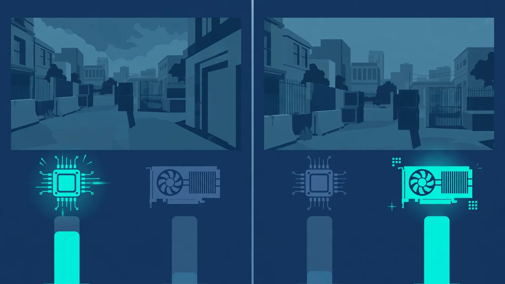

CS2 Bottleneck: Is Your CPU or GPU Limiting Your FPS?
The short answer to the CS2 bottleneck question: in Counter-Strike 2, the CPU is usually the limit. At the low settings and 1080p resolution most competitive players use, the processor must prepare every frame before the graphics card can draw it — and a graphics card cannot draw frames the CPU has not prepared yet. That is why a GPU upgrade sometimes changes almost nothing in CS2, and why low GPU usage during a match is often a clue, not a fault. This guide explains how CS2 uses each part, how to tell which one limits your FPS, and what to change or upgrade first.

CS2 Bottleneck: Why the CPU Usually Sets the Ceiling
Counter-Strike has always been a CPU-heavy game, and CS2 continues that tradition on the newer Source 2 engine. Every round, your processor handles player movement, hit registration, physics, and the subtick system, which records player actions between traditional tick intervals so shots and movement feel more responsive. That work happens on a small number of cores, and it happens for every single frame — so the speed of your fastest cores matters far more than how many cores you have in total.
This is the heart of the CS2 bottleneck. A frame is a two-step job: the CPU prepares it, then the GPU draws it. If the CPU can only prepare 200 frames per second, then 200 FPS is your ceiling no matter how powerful the graphics card is — the GPU will simply wait between frames. In CS2, the limiting step is usually the preparation, not the drawing.
Source 2 adds to the CPU's load: dynamic lighting, volumetric smoke effects and more complex map interactions all need processor time, and the effect shows up exactly where it hurts — in crowded fights and heavy utility use. If your FPS is fine on an empty site but dips hard in a five-player execute, that pattern points straight at the CPU.
How CS2 Uses Your CPU and GPU
Think of the two parts as a production line. The CPU handles game logic, movement, bullet trajectories and hit registration, physics, network communication, and telling the GPU what to draw. The GPU draws the scene: geometry, textures, lighting, shadows, smoke and particles, at whatever resolution and settings you chose.
At competitive settings — 1080p, low shadows, low effects — the GPU's job is small, so it finishes each frame quickly and waits. At high settings and higher resolutions, the GPU's job grows much larger: more pixels to shade, heavier shadows, richer effects. Somewhere along that scale the balance flips, and the GPU becomes the slower step. Neither part is "the CS2 part" in isolation; the bottleneck is whichever step is slower on your settings, on your hardware, in that moment of the match.
Video memory can join in when textures and frame buffers grow — our VRAM guide explains when that becomes the limit.
How to Tell Whether Your CS2 Bottleneck Is the CPU or the GPU
You do not need to guess: a five-minute test during a real match tells you. Open an overlay such as MSI Afterburner or the game's own cl_showfps 1 console command, and watch CPU and GPU usage while you play a busy round — not in the menu, where usage means nothing.
| What you see | What it means | Your bottleneck |
|---|---|---|
| GPU usage well below full, FPS capped, CPU cores busy | The graphics card waits for frames the CPU has not prepared | CPU |
| GPU usage near full, FPS falls when you raise settings | The graphics card cannot draw faster at these settings | GPU |
| Both usages low, FPS still capped | Something else caps frames: a frame cap, VSync, thermals or background software | Neither — a cap or throttle |
| FPS fine alone, dips in fights and smokes | CPU load spikes with players, utility and effects on screen | CPU, load-dependent |
Then run the settings test, which is the most decisive check of all. Drop your graphics settings from high to low and compare FPS in the same kind of round. If FPS jumps, the GPU was the limit. If FPS barely moves, the CPU was the limit — lowering settings only made the GPU's job easier, and the GPU was never the slow step. Our low GPU usage guide covers this pattern in general, and our bottleneck check guide walks through the same diagnosis for any game.
Watch one trap: overall CPU usage can look modest even during a CPU bottleneck, because CS2 leans on a few cores. Look at per-core usage — if one or two cores sit near full while the GPU idles, that is your answer.
When the GPU Becomes the CS2 Bottleneck
The GPU takes over as the limit when its job grows: higher resolution, higher settings, or both. At 1440p and especially 4K, the graphics card must shade far more pixels per frame, and heavy shadow quality, ambient occlusion and anti-aliasing add work on top. A modest graphics card paired with a strong CPU will hit its ceiling here, and the symptom is clear: FPS drops as settings rise, and GPU usage sits near full.
This is why two players with the same graphics card can report very different CS2 performance: the player at 1080p low settings is measuring their CPU, while the player at 1440p high settings is measuring their GPU. If you play CS2 for looks rather than competition, budget for the GPU first.
One more GPU-side case: frame generation and upscaling. These tools are built for GPU-heavy single-player games, not CS2. Upscaling reduces GPU load, which helps only if the GPU was the limit, and frame generation adds latency — exactly what a reaction-based shooter punishes. For competitive play, leave both off; they do not fix a CS2 bottleneck that lives in the CPU.
CS2 Bottleneck at 144Hz, 240Hz and 360Hz
Your monitor's refresh rate decides how much CPU you need. At 144Hz, a modern mid-range CPU with strong single-core performance usually keeps up at competitive settings. At 240Hz, the CPU must prepare 240 frames per second — a much harder bar where weaker or older processors fall behind even with a powerful graphics card. At 360Hz, only top-tier CPUs keep up consistently.
The practical point: chasing a higher refresh rate raises the CPU bar, not just the GPU bar. If your CPU caps at around 200 FPS, a 240Hz monitor will not show 240 FPS no matter which graphics card you install. For 144Hz, a balanced mid-range pairing is enough; for 240Hz and above, the CPU is the purchase that matters most. Our monitor bottleneck guide explains how refresh rate and resolution interact with the rest of the system.
The Settings That Ease a CPU-Limited Game
If your tests point at the CPU, the honest truth is that settings help less than players hope — but a few are worth changing. Shadow quality and ambient occlusion load both parts, and lowering them trims CPU work on draw calls as well as GPU work. Effects detail matters during utility-heavy rounds, when smokes and particles spike the load. Multisample anti-aliasing and high resolutions, by contrast, mostly load the GPU, so cutting them will not rescue a CPU-limited system.
Beyond in-game settings, clear the CPU's competition. Close browsers, launchers and recording software while you play — background apps consume the same cores CS2 needs, and a CPU running at 100% from background work leaves nothing for the game. Set Windows to its high-performance power plan, keep drivers current, and check temperatures: a hot CPU throttles itself, which looks like a sudden bottleneck a few rounds into a match. Our thermal throttling guide shows how to tell the two apart.
What to Upgrade First for CS2
Upgrade the part your tests named, and only that part. For a CPU-limited system, look for strong single-core performance and large cache — the combination competitive players favour — rather than simply more cores. A six-core processor with high clock speeds will serve CS2 better than an older eight-core chip with lower per-core speed, because the game's heaviest work runs on few cores. Check that a new CPU fits your motherboard and memory first; a platform change costs more than the chip alone.
For a GPU-limited system — high resolution, high settings, GPU usage near full — a graphics card upgrade is the right move, and it is the one case where a new GPU transforms CS2 performance. Before buying either part, run your pairing through the PC Bottleneck Calculator (see its methodology) and compare it with our CPU vs GPU bottleneck guide so you spend on the part that is actually limiting you. The most common CS2 upgrade mistake is buying a faster graphics card for a CPU-limited system and wondering why the frame rate barely moved.
If neither part is clearly the limit, look elsewhere before spending: a frame cap, VSync, a power plan, thermals, or a driver issue. Hardware cannot fix a cap, and it is free to check.
Why High FPS Can Still Feel Choppy in CS2
Average FPS is not the whole story in CS2. The game lives or dies on consistency: a stable frame time matters more than a high headline number, because one stutter during a peek can cost a duel. If your average looks fine but the game feels uneven, read our guides on frame time and stuttering and 1% lows — they explain why a high average can hide bad lows.
CS2 has its own choppiness triggers. Shader compilation after an update or driver change can cause hitches until shaders are cached, and network problems can feel like performance problems: high ping makes the game feel unresponsive even at high FPS, so rule out your connection before blaming hardware. If you also stream while you play, encoding adds a second load; our streaming while gaming guide covers that trade-off.
Free PC Bottleneck Calculator — Estimate CPU and GPU balance for your resolution and workload: check whether your CPU or GPU is the slow half of the frame on the PC Bottleneck Calculator (see its methodology page) before you buy an upgrade for CS2.
Conclusion
So, is the CS2 bottleneck in your CPU or your GPU? For most players at competitive settings, it is the CPU: the processor prepares every frame, a few fast cores matter more than many slower ones, and a powerful graphics card cannot outrun a processor that caps the frame count. At high resolutions and high settings, the balance flips — which is why the settings test matters more than any rule of thumb. Test your own PC, fix the free things first (background apps, power plan, drivers, thermals), and upgrade only the part your tests name.
Frequently Asked Questions
Is CS2 CPU or GPU intensive?
Both, but it leans on the CPU more than most modern games. At competitive settings — low graphics, 1080p, high frame-rate targets — the processor usually sets the ceiling, because it must prepare every frame before the graphics card can draw it. At higher resolutions and graphics settings, the GPU takes on more work and can become the limit instead.
Why is my GPU usage so low in CS2?
Low GPU usage in CS2 usually means the graphics card is waiting on the CPU. If the processor cannot prepare frames fast enough, the GPU sits idle between frames even though it could draw more. This is normal at low settings on a strong graphics card, and it is the classic sign of a CPU bottleneck rather than a broken GPU.
Why is CS2 FPS low on a high-end PC?
Most often it is a CPU limit, thermal throttling, or background software — not a weak graphics card. CS2 taxes a few CPU cores hard during fights and utility-heavy rounds, so a high-end GPU cannot help if the processor caps the frame rate. Check CPU usage and temperatures during a match, close heavy background apps, and update drivers before assuming the GPU is at fault.
Does lowering settings increase FPS in CS2?
Only if the graphics card is the limit. Lowering settings reduces GPU work, so it raises FPS on a GPU-limited system. On a CPU-limited system, lowering settings changes little, because the processor still has to prepare the same number of frames — it just prepares simpler ones. That is why players with a CPU bottleneck often see almost no gain from dropping to the lowest settings.
Should I upgrade my CPU or GPU for CS2?
Upgrade the part your own tests name. If GPU usage stays low while FPS is capped and lowering settings barely helps, a faster CPU — ideally one with strong single-core performance — is the upgrade that moves CS2 frame rates. If GPU usage sits near full and raising settings drops FPS, the graphics card is the limit and a GPU upgrade makes sense.
Sources
Official documentation referenced in this guide: